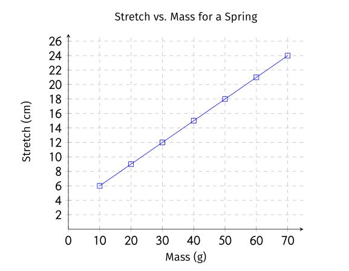

class: center, middle .title[*Physics Skills*] .subtitle[How We Do Physics] .author[👨🏻🏫 Nathan Porter] .institution[🏫 Maple Hill High School] .coauthor[] .institution[] .date[📅 2018-2019] .center[] <!--.footnote[Created with [{Remark.js}](http://remarkjs.com/) using [{Markdown}](https://daringfireball.net/projects/markdown/) + [{MathJax}](https://www.mathjax.org/)]--> --- #Scientific Abilities: - an ability to represent knowledge in multiple ways; -- - an ability to design experiments to investigate new phenomena, test hypotheses and solve experimental problems; -- - an ability to collect and analyze experimental data; -- - an ability to devise and test relationships and explanations; -- - an ability to evaluate reasoning and experimental design; -- - an ability to communicate. --- #Experimental Design - Design a controlled experiment: -- - when designing an experiment you want to see how one variable affects one other variable. Everything else that could play a role in the experiment should be held constant. These are your control variables. -- - you should choose one variable to manipulate, observe its effect on a second, and hold everything else constant -- - the varible you manipulate is your **independent varible** -- - the variable that depends on your IV is your **dependent variable** -- - 8 by 10 rule: 8 data points where the largest independent variable is 10 times as large as the smallest. --- ##Graphical Analysis and Linear Mathematical Modeling: .center[] **Math Equation:** `\(y=0.3x+3.2\)` **Physics Equation:** Stretch = (0.3 cm/g)*mass + 3.2 cm --- ##Graphical Meanings **Physics Equation:** Stretch = (0.3 cm/g)*mass + 3.2 cm - The slope and intercept usually have physical meanings. -- - The spring streches 0.3 cm *for each* 1 gram added to the spring. -- - The slope is shows the effect the IV has on the DV when it is changed. It is a rate of change. -- - The spring was streched 3.2 cm before any mass was added. -- - The intercept is often, but not always, a control variable. This is why it is important to record your control variables. --- ##Graphical Meanings **Physics Equation:** Stretch = (0.3 cm/g)*mass + 3.2 cm - The mathematical model allows us to make predictions. For example: how far wil the spring stretch if we add 100 grams of mass to it? --- ##Linearizing